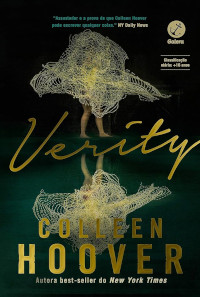
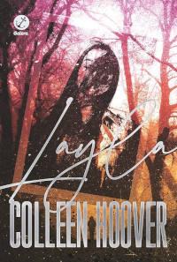

Suspense
Verity
Colleen Hoover
É um suspense psicológico que segue Lowen Ashleigh, uma escritora que, após aceitar um trabalho para terminar uma série de livros inacabada, descobre manuscritos de uma autora famosa, Verity Crawford, que revelam segredos sombrios e perturbadores. Enquanto se envolve com o viúvo de Verity, Lowen fica obcecada pelos segredos que pode ter descoberto, enfrentando uma luta moral e emocional intensa.
As Musas
Alex Michaelides

É um thriller psicológico que segue a história de uma artista famosa, que é encontrada morta em circunstâncias misteriosas, e a sua irmã, que tenta descobrir a verdade por trás do crime. O enredo revela camadas de segredos, manipulações e mistérios enquanto a protagonista investiga os eventos que levaram à tragédia.
A lista de Convidados
Lucy foley

É um mistério de suspense situado em um luxuoso casamento em uma ilha remota. A história se desenrola a partir do ponto de vista de vários personagens, revelando segredos e tensões entre os convidados, que culminam em um crime chocante que precisa ser desvendado.
Layla
Colleen Hoover
É um romance de suspense e mistério que segue Leeds e Layla, um casal que passa por um evento traumático que afeta profundamente seu relacionamento. Quando Leeds leva Layla para um retiro em um local isolado, ele começa a perceber eventos sobrenaturais que desafiam sua compreensão da realidade e ameaçam sua relação.
A Última Festa
Lucy foley

É um thriller que gira em torno de uma festa de Ano Novo em uma mansão isolada, onde um assassinato acontece. A narrativa é contada a partir de múltiplas perspectivas, revelando as complexas relações e os segredos dos convidados enquanto tentam descobrir o responsável pelo crime.
A Paciente Silenciosa
Alex Michaelides

É um suspense psicológico que segue Alicia Berenson, uma artista que, após matar seu marido, se torna muda e é internada em um hospital psiquiátrico. O psicoterapeuta Theo Faber se torna obcecado por desvendar o motivo por trás do crime e o que levou Alicia ao silêncio, mergulhando em uma trama de mistério e revelações surpreendentes.